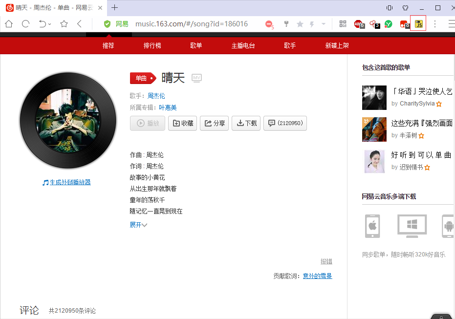
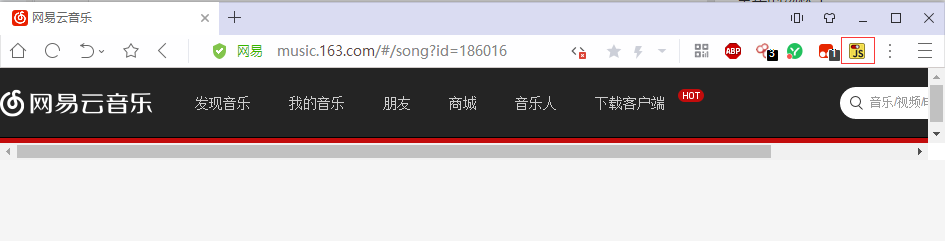
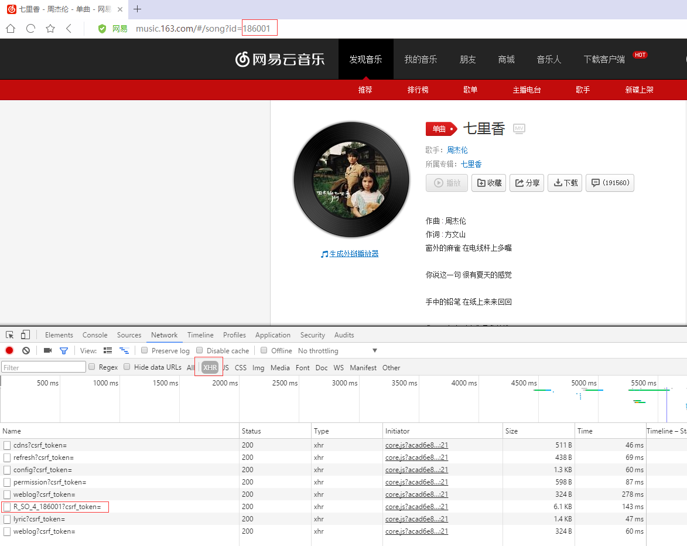
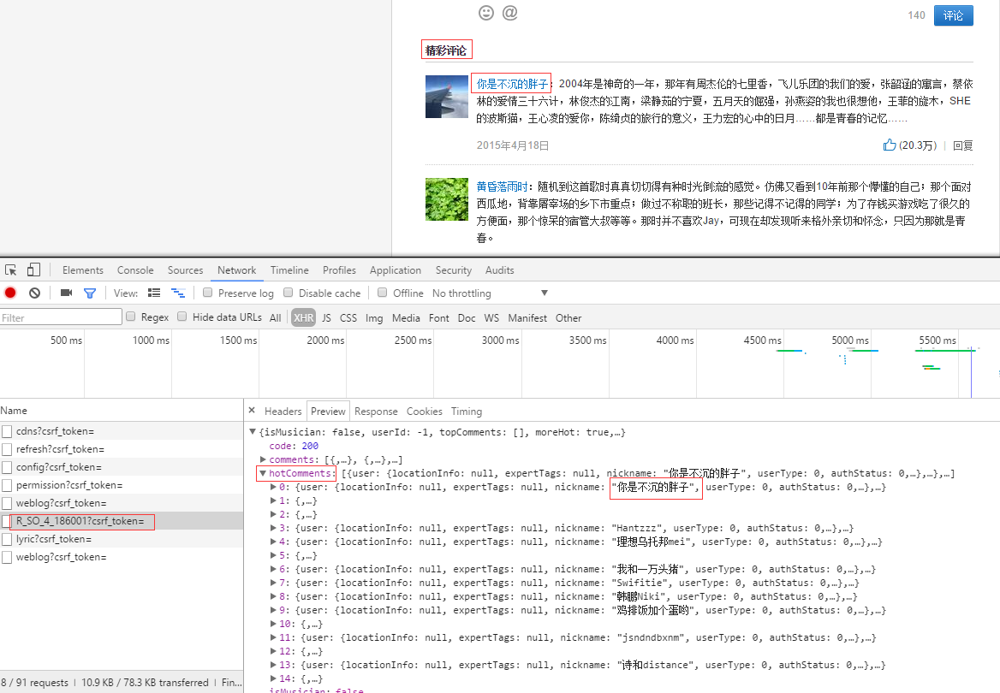
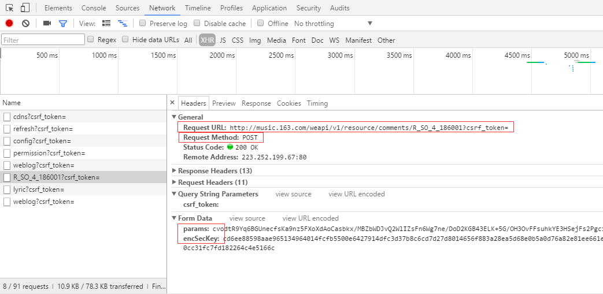
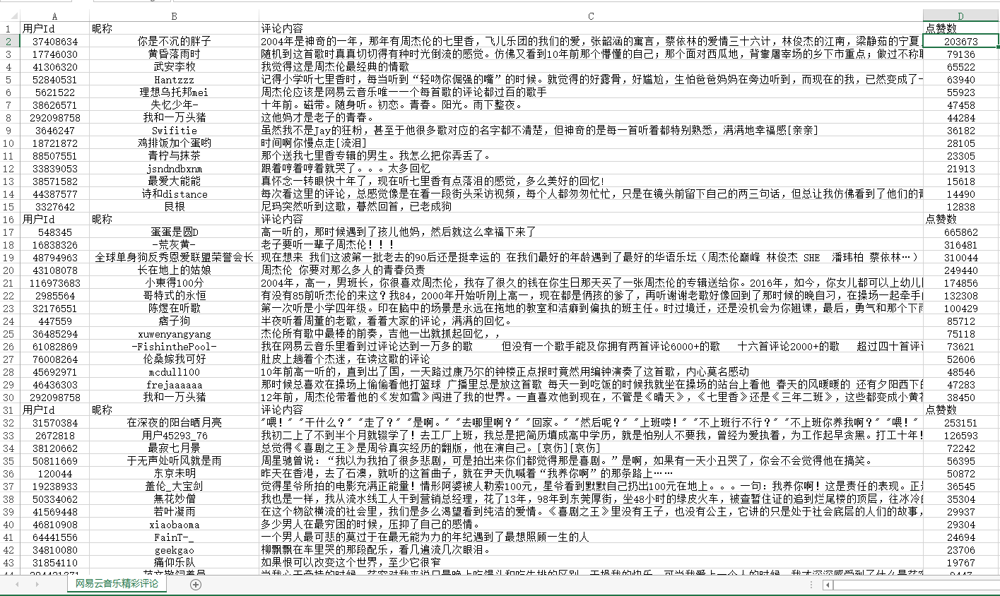

(一)
故事的小黄花
从出生那年就飘着
童年的荡秋千
随记忆一直晃到现在
Re So So Si Do Si La
So La Si Si Si Si La Si La So
吹着前奏望着天空
我想起花瓣试着掉落
……
小编猴哥有个爱好，喜欢一边听着熟悉的旋律，一边看着网易云音乐歌曲中的评论，特别是精彩评论。
评论内容，让人泫然流涕的故事，就是让人深思的段子。
（二）
某天，猴哥突发奇想，想将自己平时喜欢听的歌曲的精彩评论爬取下来。以后就可以直接阅读这些评论，无须打开网页。
说干就干。猴哥打开浏览器访问网易云音乐，随便点击某个歌曲页面。现在大多数网站都采用 Ajax 技术来获取数据。所以需要先判断网页是否采用该技术。
有个谷歌浏览器插件名为 Toggle JavaScript，它能控制页面中 javascript 启用或者禁用。
正常的页面长这样：

当禁用页面 JavaScript 脚本之后，正常显示数据页面会变成一个空白页面。

因此，可以断定网易云音乐加载数据方式采用 Ajax。
Ajax 技术可以在不刷新页面的情况下，利用嵌在 HTML 文档中的 JavaScript 脚本向服务器请求数据，然后更新到页面。想进一步确认数据来源，需要知道请求域名以及请求参数。
这就需要借助浏览器的开发者工具(一般按 F12 键会显示)，根据抓取数据包进行分析。因为我们已经确定网站采用 Ajax ，所以直接在选择 XHR 过滤器过滤出所有请求。

然后依次对每个 url 链接的 HTTP 请求进行分析，着重观察 Headers，Preview 选项。最后，猴哥发现 R_SO_4_186001?csrf_token= 请求中有我们需要的信息。Preview 中有字段跟精彩评论中用户名一致。

继续切换到 Headers 确认请求域名以及请求需要携带的参数。

那么爬取思路是：使用 POST 方式携带参数 params 和 encSecKey 向该地址 http://music.163.com/weapi/v1/resource/comments/R_SO_4_186001?csrf_token= 发起HTTP 请求。返回结果中的 Json 数据就是用户评论数据。
（三）
既然思路明确，编写代码就是容易多了。
这里，猴哥使用列表来保存想爬取精彩评论的歌曲。
1
2
3
4
5
6
7
8
9
10
11
12
13
14
| songs_url_list = [
'http://music.163.com/#/song?id=186016',
'http://music.163.com/#/song?id=186001',
'http://music.163.com/#/song?id=27876900',
'http://music.163.com/#/song?id=439915614',
'http://music.163.com/#/song?id=139774',
'http://music.163.com/#/song?id=29567189',
'http://music.163.com/#/song?id=308353',
'http://music.163.com/#/song?id=31445772',
'http://music.163.com/#/song?id=439915614',
'http://music.163.com/#/song?id=28815250',
'http://music.163.com/#/song?id=25706282',
'http://music.163.com/#/song?id=436514312',
]
|
然后截取每个链接中 id 字段的值。
1
2
3
4
| def get_song_id(url):
""" 从 url 中截取歌曲的 id """
song_id = url.split('=')[1]
return song_id
|
接着根据 id 拼接处请求的 url 地址，再使用 requests 发起 HTTP 请求。
1
2
3
4
5
6
7
8
9
10
11
12
13
14
15
16
17
18
19
20
21
22
23
24
25
| for each in songs_url_list:
start_spider(get_song_id(each))
time.sleep(random.randint(5, 8))
def start_spider(song_id):
""" 评论数据采用 AJAX 技术获得, 下面才是获取评论的请求地址 """
url = 'http://music.163.com/weapi/v1/resource/comments/R_SO_4_{}?csrf_token='.format(song_id)
headers = {
'User-agent': 'Mozilla/5.0 (Windows NT 6.3; WOW64) AppleWebKit/537.36 (KHTML, like Gecko) Chrome/55.0.2883.87 UBrowser/6.2.3964.2 Safari/537.36',
'Origin': 'http://music.163.com',
'Referer': 'http://music.163.com/song?id={}'.format(song_id),
}
formdata = {
'params': '57Wh2mgebLOOPQVBc+B2wz4sCCH/nXZFEoTc/XNySiqT0V7ZxUADzDNgTXXhYgAJ5BNMryMgxhdwNzF1GyxDZo3iR9/YYbWgCAQHC5DCDuObqvxNcOcnQDaRqJCrqQcrEABW1SwKitfbD3wMEyB4tJu+rU8goSwg2FP/PBBLs9DVs1iWdWGjV6CdrocA36Rs',
'encSecKey': '63774137ba4f5cc60d1b6a3bc14985a9563a7bfdec4f3e74297ffc07514adf18f90620933a01c2db4ca989cc4e1dfc49789981424c294a34e48c2cbe7aa51533a5cc5b5776a9e499cd08770bc596655dbe8e001d1ed5fd47a27dd195128480820cc67a799d341f95d447e3522851f2b64ad1cb8350e2015b265b9e684179351c',
}
response = requests.post(url, headers=headers, data=formdata)
print('请求 [ ' + url + ' ], 状态码为 ')
print(response.status_code)
write_to_file(get_hot_comments(response.text))
|
因为请求返回结果是 Json 数据，我们只需要精彩评论(HotComments)内容，所以需要对数据进行处理下。
1
2
3
4
5
6
7
8
9
10
11
12
13
14
15
16
| def get_hot_comments(response):
""" 获取精彩评论
请求返回结果是 Json 数据格式, 使用 json.loads(response) 将其转化为字典类型, 就可以使用 key-value 形式获取值
"""
data_list = []
data = {}
for comment in json.loads(response)['hotComments']:
data['userId'] = comment['user']['userId']
data['nickname'] = comment['user']['nickname']
data['content'] = comment['content']
data['likedCount'] = comment['likedCount']
data_list.append(data)
data = {}
return data_list
|
最后将数据保存到 CSV 文件中。
1
2
3
4
5
6
7
8
9
10
11
12
13
14
15
16
17
18
| def write_to_file(datalist):
print('开始将数据持久化……')
file_name = '网易云音乐精彩评论.csv'
with codecs.open(file_name, 'a+', 'GBK') as csvfile:
filednames = ['用户Id', '昵称', '评论内容', '点赞数']
writer = csv.DictWriter(csvfile, fieldnames=filednames)
writer.writeheader()
for data in datalist:
print(data)
try:
writer.writerow({filednames[0]: data['userId'],
filednames[1]: data['nickname'],
filednames[2]: data['content'],
filednames[3]: data['likedCount']})
except UnicodeEncodeError:
print("编码错误, 该数据无法写到文件中, 直接忽略该数据")
|
写到这里，小伙伴们应该了解如何爬取运用 Ajax 技术加载数据的网站了。可能某些网站的请求携带的参数只能使用一次，那就进一步数据包中 js 代码。推断出加密方式，自己再用代码还原。
哈哈，这里请允许我贴下爬取结果。



故事的小黄花从出生那年就飘着童年的荡秋千随记忆一直晃到现在
Re So So Si Do Si LaSo La Si Si Si Si La Si La So吹着前奏望着天空我想起花瓣试着掉落……
小编猴哥有个爱好，喜欢一边听着熟悉的旋律，一边看着网易云音乐歌曲中的评论，特别是精彩评论。)
故事的小黄花从出生那年就飘着童年的荡秋千随记忆一直晃到现在
Re So So Si Do Si LaSo La Si Si Si Si La Si La So吹着前奏望着天空我想起花瓣试着掉落……
小编猴哥有个爱好，喜欢一边听着熟悉的旋律，一边看着网易云音乐歌曲中的评论，特别是精彩评论。)
故事的小黄花从出生那年就飘着童年的荡秋千随记忆一直晃到现在
Re So So Si Do Si LaSo La Si Si Si Si La Si La So吹着前奏望着天空我想起花瓣试着掉落……
小编猴哥有个爱好，喜欢一边听着熟悉的旋律，一边看着网易云音乐歌曲中的评论，特别是精彩评论。)